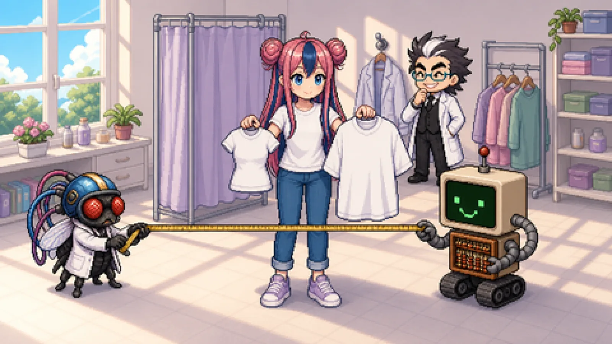
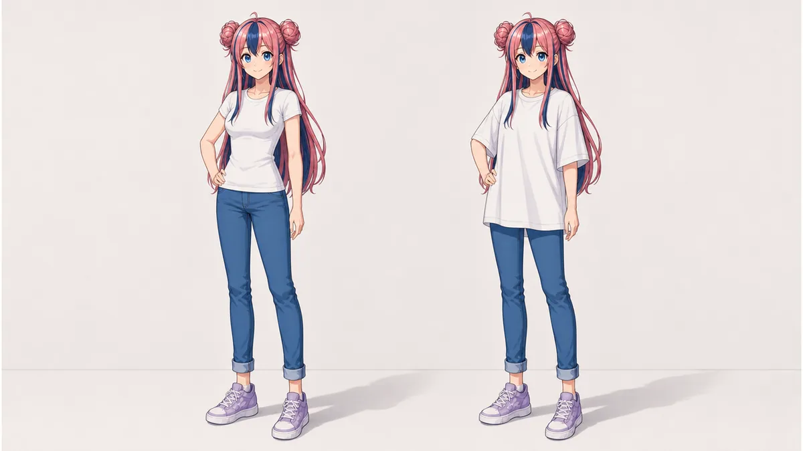
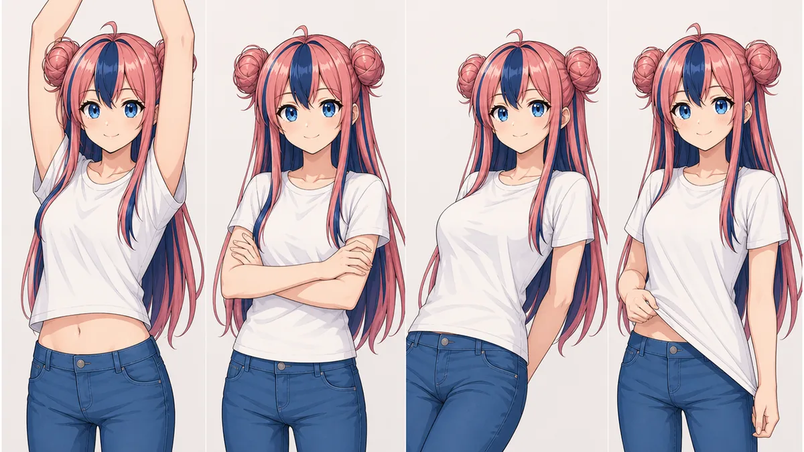
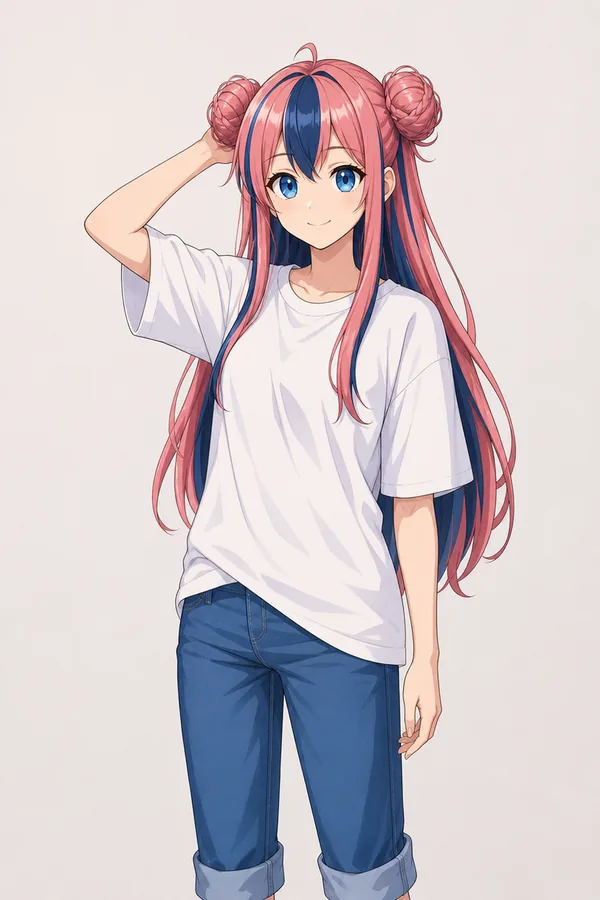
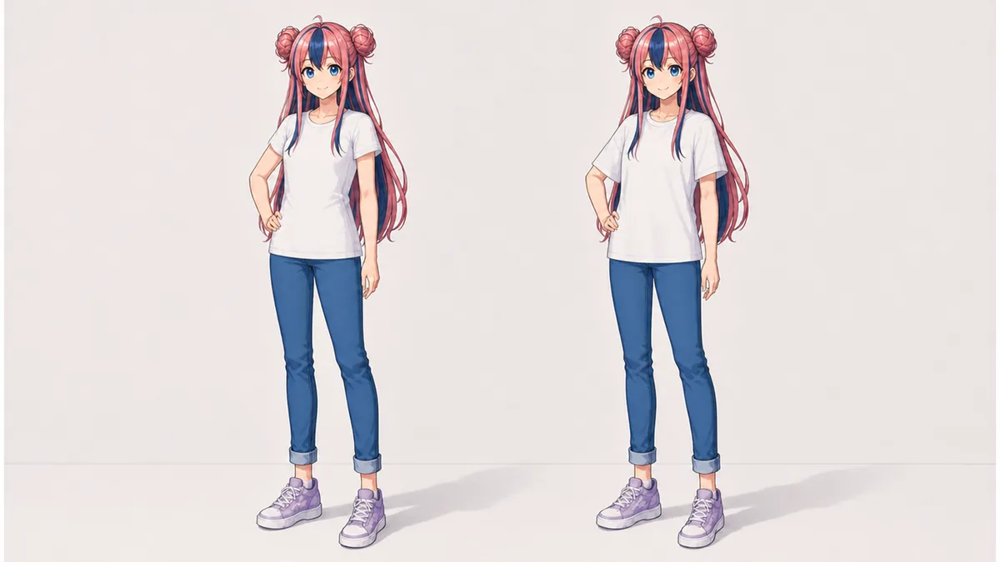
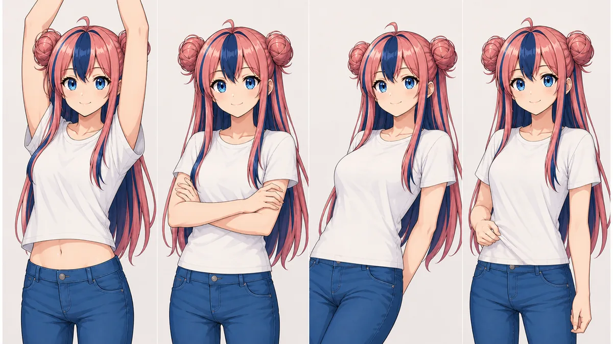
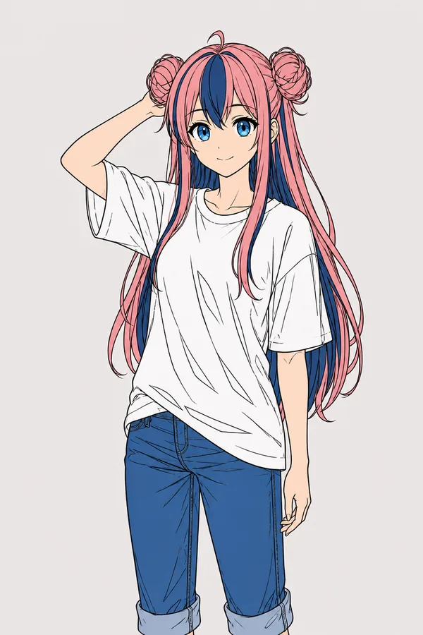

오늘의 과제

박사하루가 딱 맞는 티셔츠와 헐렁한 티셔츠를 차례로 입고 같은 자세를 한다. 주름이 많은 쪽은?

주판봇딱 맞는 쪽이요! 꽉 끼면 주름이 막 생기잖아요!

초파리 연구원천이 남아야 접힐 수 있는데? 남는 천부터 재 보자.

조수 하루팔을 들면 어떻게 되는지도 궁금해요.

하루가 랩코트를 벗고 티셔츠 두 벌을 번갈아 입습니다. 딱 맞는 티셔츠와 헐렁한 티셔츠, 같은 자세인데 주름은 왜 다를까요?
그림 실력·코드·수식을 몰라도 됩니다. 실험을 눌러 보며 따라오세요.
옷 둘레가 몸 둘레보다 넉넉할수록(여유율이 클수록) 주름이 많고 굵어집니다

학교 수학으로 보면 — 비율과 백분율 — 차이를 기준값으로 나눕니다.
| 식 조각 | 뜻 |
|---|---|
| 옷 둘레 | 가슴 높이에서 잰 옷의 둘레 |
| 몸 둘레 | 같은 높이의 몸 둘레 |
| 여유율 | 남는 천의 비율. 클수록 헐렁 |

허리띠를 꽉 조이면 셔츠가 허리에 모여 주름이 생기는 것도, 남는 천이 한곳에 모였기 때문입니다.
의류 패턴에서는 이 여유를 '여유분(ease)'이라고 부르고 옷 종류마다 정해 둡니다. 3D 의상 프로그램도 패턴 둘레와 몸 둘레의 차이로 주름을 계산합니다.

딱 맞는 옷(여유율 약 7%)은 남는 천이 6cm뿐이라 접힐 곳이 거의 없고, 힘이 걸린 곳에만 가는 당김 주름이 생깁니다.
헐렁한 옷(약 33%)은 남는 천 28cm가 중력으로 처지며 굵은 처짐 주름이 여러 줄 생깁니다.
작업에서는 의상 설정표에 '딱 맞음·보통·헐렁함'을 적어 두고, 주름 수와 굵기를 그에 맞춥니다.

AI에게 'oversized t-shirt'를 요청했는데 어깨선은 헐렁한데 몸통에는 주름이 하나도 없습니다. 맞을까요?
헐렁한 옷은 남는 천이 처지며 굵은 주름이 생겨야 합니다. 'loose fabric hanging with soft vertical drape folds'처럼 주름까지 적어 다시 요청합니다.
팔을 들고, 팔짱을 끼고, 허리를 젖힐 때마다 천이 걸리는 곳이 달라집니다
빨랫줄에 셔츠를 집게 두 개로 걸면 집게 사이로 처지고, 하나로 걸면 아래로 길게 늘어집니다.
애니메이터는 동작마다 접점을 먼저 정합니다. 팔을 들면 어깨에 모임 주름이 생기고 밑단이 올라가며, 팔짱을 끼면 팔이 닿은 곳으로 주름이 모입니다.
차렷 자세에서는 어깨가 유일한 큰 접점이라 처짐 주름이 아래로 흐릅니다.
팔을 올리면 어깨에 모임 주름이 생기고, 옷이 위로 당겨져 배는 평평해지며 밑단이 올라갑니다. 팔짱은 팔이 닿은 곳으로, 밑단을 손가락으로 잡으면 그 점으로 당김 주름이 모입니다.
작업에서는 밑그림 위에 접점을 주황 점으로 먼저 찍고, 주름은 그 점에서 시작하게 긋습니다.

AI 그림에서 하루가 팔을 올렸는데 티셔츠 밑단은 그대로 허리에 있습니다. 문제일까요?
팔을 올리면 어깨가 천을 위로 끌어 밑단이 올라가야 합니다. 밑단이 그대로면 옷이 몸과 따로 노는 신호입니다.
몸 앞쪽이 튀어나올수록 천이 그 둘레를 돌아가느라 밑단이 올라가고, 접점에서 처짐 주름이 생깁니다
학교 수학으로 보면 — 피타고라스 정리 — 직각삼각형의 빗변 = √(밑변² + 높이²)입니다.
| 식 조각 | 뜻 |
|---|---|
| 길이 | 어깨부터 밑단까지 곧게 잰 길이 |
| 튀어나온 정도 | 몸 앞쪽이 그 직선에서 앞으로 나온 거리 |
| 2 × √(…) | 튀어나온 곳을 넘어가는 두 빗변의 합 |
배낭을 앞으로 메면 앞쪽 셔츠 밑단이 들려 허리가 드러나는 것도 같은 원리입니다.
캐릭터마다 체형 설정이 다르면 같은 의상도 주름이 다르게 그려집니다. 마른 체형은 접점이 적어 처짐 주름이 조금, 근육이 많은 체형은 가슴근육·어깨에 접점이 생기고 허리에 남는 천이 고입니다.
튀어나온 정도 4cm에서 밑단은 약 1cm, 8cm에서는 4cm 올라갑니다. 두 배 튀어나오면 약 네 배 올라갑니다.
튀어나온 곳이 새 접점이 되어 그 아래로 처짐 주름이 생기고, 프린트 무늬도 당겨져 넓어집니다.
작업에서는 캐릭터 체형표에 앞쪽 볼륨을 적어 두고, 의상마다 밑단 높이와 처짐 주름을 그에 맞춥니다.
체형이 다른 두 캐릭터에게 같은 티셔츠를 입혔는데 AI 그림의 밑단 높이가 똑같습니다. 맞을까요?
몸 앞쪽 볼륨이 다르면 밑단 높이도 달라야 합니다. 체형에 맞게 'the hem rides up slightly over the chest'처럼 적거나, 체형을 먼저 정확히 적어 줍니다.
선을 그으면 복잡해지는 주름은 선 없이 그림자만으로 나타냅니다
주름진 커튼을 옆에서 비추면 주름마다 한쪽에만 그늘이 생겨 선 없이도 물결이 보입니다.
애니 채색에서는 '실선이면 지저분해지는 곳은 그림자로'가 기본 규칙입니다. 산 모양 주름은 광원 반대쪽에 그림자를 넣어 볼록함을 살리고, 면이 꺾이는 곳은 그림자로 면의 차이를 만듭니다.
그림자는 언제나 주름 산의 빛 반대쪽 비탈에 생깁니다. 빛이 왼쪽이면 오른쪽 비탈, 오른쪽이면 왼쪽 비탈입니다.
'선으로'는 다섯 줄이 모두 같은 무게로 보여 복잡하고, '그림자로'는 빛 방향이 한눈에 보여 정리됩니다.
작업에서는 큰 주름 셋만 선으로, 나머지 작은 주름은 그림자로 처리하는 경우가 많습니다.

AI 그림에서 빛은 왼쪽 위인데 티셔츠 주름 그림자가 산의 왼쪽 비탈에 있습니다. 괜찮을까요?
그림자는 빛 반대쪽 비탈에 생겨야 합니다. 같은 쪽에 있으면 주름이 볼록이 아니라 오목하게(움푹 팬 것처럼) 보이는 오류입니다.
이 부에서 배운 원리를 그림 생성 AI(Genspark 등)로 직접 확인합니다. A는 이 페이지 그림을 실제로 만든 프롬프트, B는 원리를 하나 빼거나 바꾼 비교용 문장입니다.
참고 그림 내려받기: haru_anime_base · sia_anime_base · moa_anime_base · haru_sheet · sia_sheet · moa_sheet · doctor_sheet · fruitfly_sprites_6 · jupanbot_ref_genspark_v0 · pixel_style_ref_prev_cover
같은 사람, 같은 자세에서 핏만 바꿔 남는 천이 주름을 어떻게 바꾸는지 실제 그림으로 봅니다.
첨부: refs/haru_anime_base.png, refs/haru_sheet.png
Illustration, wide 16:9. Art style: high-quality anime illustration, clean confident lineart, two-tone cel shading with a darker second shadow only in the deepest folds, natural adult proportions. Match the attached reference images exactly (face, hair, colors, accessories). All characters are adults in their early twenties (the Professor is an adult man); modest outfits exactly as described. Two full-body figures of the same person side by side in the same relaxed standing pose: LEFT wearing a fitted plain white crew-neck t-shirt (close to the body, only a few thin tension folds), RIGHT wearing a loose oversized plain white t-shirt (dropped shoulder seams, large soft drape folds hanging from the shoulders). Haru (adult lab assistant, long straight pink hair with navy streaks and a thick navy streak down the center of the bangs, two round hair buns on top, small ahoge, big blue eyes), wearing plain white t-shirt, rolled-up jeans, lavender sneakers (no lab coat, no hoodie). Light from the upper left, fold shadows on the lower right side of each fold. Plain off-white studio background or a bright clean lab interior. No text, no letters, no numbers, no logos, no watermark, no revealing clothing, not childlike, no school uniform, not resembling any famous anime character.
Same image. Change only: make both t-shirts exactly the same ordinary size; do not describe them as fitted or oversized. Still no text.

실제 결과: B에서는 두 사람이 똑같아져 구별되지 않았습니다. 핏 낱말이 빠지면 핏의 차이도 사라집니다.
팔 올리기·팔짱·허리 젖히기·밑단 잡기에서 주름의 시작점이 바뀌는지 봅니다.
첨부: refs/haru_anime_base.png, refs/haru_sheet.png
Illustration, wide 16:9. Art style: high-quality anime illustration, clean confident lineart, two-tone cel shading with a darker second shadow only in the deepest folds, natural adult proportions. Match the attached reference images exactly (face, hair, colors, accessories). All characters are adults in their early twenties (the Professor is an adult man); modest outfits exactly as described. Four small upper-body panels of the same person in a plain white t-shirt: 1) both arms raised above the head (folds gather at the shoulders, the hem rides up, the belly area is smooth), 2) arms crossed (folds pulled toward the arms), 3) leaning back slightly (folds from chest and armpits toward the waist), 4) pinching the hem with one hand (diagonal tension folds from the shoulder to the fingers). Haru (adult lab assistant, long straight pink hair with navy streaks and a thick navy streak down the center of the bangs, two round hair buns on top, small ahoge, big blue eyes), wearing plain white t-shirt and rolled-up jeans (no lab coat, no hoodie). Same framing in each panel, light from the upper left, no labels. Plain off-white studio background or a bright clean lab interior. No text, no letters, no numbers, no logos, no watermark, no revealing clothing, not childlike, no school uniform, not resembling any famous anime character.
Same image. Change only: keep the t-shirt exactly the same in all four panels — same folds and the same hem height. Still no text.

실제 결과: B에서 밑단 잡기 그림의 대각선 당김 주름이 사라졌습니다(손가락이 접점이 되지 못함). 팔 올리기의 밑단은 그대로 올라가 있어, 도구가 옷을 완전히 굳히지는 못했습니다.
작은 주름을 선 없이 그림자만으로 그려, 빛 방향만으로 볼록함이 살아나는지 봅니다.
첨부: refs/haru_anime_base.png, refs/haru_sheet.png
Illustration, vertical 2:3. Art style: high-quality anime illustration, clean confident lineart, two-tone cel shading with a darker second shadow only in the deepest folds, natural adult proportions. Match the attached reference images exactly (face, hair, colors, accessories). All characters are adults in their early twenties (the Professor is an adult man); modest outfits exactly as described. Upper body of the character in a loose oversized white t-shirt, one hand resting on her head. Most small folds are drawn WITHOUT lines, only as soft lavender island shadows on the lower right side of each fold ridge; only three large folds keep a thin line. Haru (adult lab assistant, long straight pink hair with navy streaks and a thick navy streak down the center of the bangs, two round hair buns on top, small ahoge, big blue eyes), wearing loose plain white t-shirt and rolled-up jeans (no lab coat, no hoodie). Light clearly from the upper left. Plain off-white studio background or a bright clean lab interior. No text, no letters, no numbers, no logos, no watermark, no revealing clothing, not childlike, no school uniform, not resembling any famous anime character.
Same image. Change only: draw every fold with a dark line and remove all fold shadows. Still no text.

실제 결과: B는 주름마다 선이 생기고 그림자가 줄어, 더 복잡하고 납작해 보입니다.
'직접 만들어 보기'가 이 페이지 그림을 다시 만들어 보는 것이었다면, 연습 문제는 새 상황을 스스로 풀어 보는 것입니다. 정답 그림은 하나가 아니므로, 아래 '예상 결과'는 완성 예시 프롬프트로 실제로 만든 한 가지 예입니다.
참고 그림 내려받기: haru_anime_base · sia_anime_base · moa_anime_base · haru_sheet · sia_sheet · moa_sheet · doctor_sheet · fruitfly_sprites_6 · jupanbot_ref_genspark_v0 · pixel_style_ref_prev_cover
여유율이 큰 티셔츠에서 두 팔을 올리면 접점이 어디로 옮겨 가는지 예상하고, 그 예상을 프롬프트로 적어 확인합니다(2부 1·2단계).
헐렁한 티셔츠 — 약 30%. 남는 천이 많아 굵은 주름이 생깁니다.
어깨와 겨드랑이. 어깨에 모임 주름이 생기고, 천이 위로 당겨져 밑단이 올라가며 배 쪽은 평평해집니다.
[인물], 헐렁한 [색] 티셔츠(여유 약 [30]%), 자세: [두 팔 올리기] → 어깨에 [모임 주름], 밑단 [올라감], 배는 [평평] / 빛: [방향]
첨부: refs/doctor_sheet.png
Illustration, vertical 2:3. Art style: high-quality anime illustration, clean confident lineart, two-tone cel shading with a darker second shadow only in the deepest folds, natural adult proportions. Match the attached reference images exactly (face, hair, colors, accessories). All characters are adults in their early twenties (the Professor is an adult man); modest outfits exactly as described. Full body of the Professor (adult male scientist, dark charcoal spiky hair with a white streak at the front, very thick black eyebrows, teal rectangular glasses), wearing a loose oversized plain white t-shirt (about 30% ease) and dark gray trousers (no lab coat), stretching with both arms raised above his head. Folds gather at the shoulders, the torso fabric is pulled up and becomes fairly flat, the hem rides up a little, large soft drape folds under the arms. Adult man in his thirties, normal proportions (not chibi). Modest: the hem rises only slightly. Light from the upper left. Plain off-white studio background or a bright clean lab interior. No text, no letters, no numbers, no logos, no watermark, no revealing clothing, not childlike, no school uniform, not resembling any famous anime character.
어깨 위에 짧은 모임 주름이 몰리고, 몸통은 위로 당겨져 비교적 매끈합니다. 밑단은 허리띠 위로 살짝 올라가고, 남는 천은 겨드랑이 아래에서 굵게 처집니다.
| 증상 | 같은 대화에 이어 붙일 문장 |
|---|---|
| 티셔츠가 몸에 딱 붙었다 | Same image. Change only: the t-shirt is clearly oversized, with dropped shoulder seams and loose fabric hanging away from the body. |
| 밑단이 그대로 허리에 있다 | Same image. Change only: because both arms are raised, the hem of the t-shirt rides up slightly. |
2부 4단계(선 대신 그림자)를 빛 방향을 바꿔 연습합니다. 페이지 예시는 빛이 왼쪽 위였습니다. 이번엔 오른쪽 위에서 비추고, 주름 그림자가 반대쪽(왼쪽 아래)으로 가는지 확인합니다.
주름 산마다 왼쪽 아래 비탈에 생깁니다.
큰 주름 셋만 선으로, 나머지 작은 주름은 섬 그림자로.
[인물], 헐렁한 [색] 후드티, 작은 주름은 [선 없이 그림자]로, 큰 주름 [3]개만 선 / 빛: [오른쪽 위] → 그림자는 [왼쪽 아래 비탈]
첨부: refs/sia_anime_base.png, refs/sia_sheet.png
Illustration, vertical 2:3. Art style: high-quality anime illustration, clean confident lineart, two-tone cel shading with a darker second shadow only in the deepest folds, natural adult proportions. Match the attached reference images exactly (face, hair, colors, accessories). All characters are adults in their early twenties (the Professor is an adult man); modest outfits exactly as described. Upper body of Sia (adult maid intern, long straight jet-black hair, no headdress, gray eyes, small silver earrings), wearing a loose oversized light gray hoodie and a black skirt, one hand tucking her hair behind her ear. Most small folds on the hoodie are drawn WITHOUT lines, only as soft gray-lavender island shadows on the LOWER LEFT side of each fold ridge; only three large folds keep a thin line. Light clearly from the UPPER RIGHT (a soft window glow at the upper right). All form shadows on the left side of the face and body. Plain off-white studio background or a bright clean lab interior. No text, no letters, no numbers, no logos, no watermark, no revealing clothing, not childlike, no school uniform, not resembling any famous anime character.
오른쪽 위 창가 빛을 받아 얼굴과 몸의 왼쪽이 어둡고, 후드티의 작은 주름은 선 없이 왼쪽 아래에 붙은 연한 그림자 조각으로 보입니다. 선이 적은데도 천이 도톰하게 부풀어 보입니다.
| 증상 | 같은 대화에 이어 붙일 문장 |
|---|---|
| 그림자가 빛 쪽(오른쪽)에 생겼다 | Same image. Change only: light comes from the upper right, so every fold shadow sits on the lower left side of each fold ridge. |
| 주름이 전부 선으로 그려졌다 | Same image. Change only: draw small folds only as soft shadows without lines; keep lines for three large folds only. |

| 항목 | 주판봇 | 초파리 |
|---|---|---|
| 닮음(외형 고정값) | 8 | 8 |
| 핏 구별(여유율) | 3 | 8 |
| 자연스러움(접점) | 4 | 7 |
| 합계 | 15 | 23 |


점수는 이야기 속 예시입니다. 실제 그림을 평가한 값이 아닙니다.
| 주제 | 한 줄 | 작업에서는 |
|---|---|---|
| 여유율 | (옷 둘레 − 몸 둘레) ÷ 몸 둘레 | 핏마다 주름 수·굵기 |
| 접점 | 자세가 바뀌면 시작점도 바뀐다 | 접점을 점으로 먼저 |
| 몸의 볼륨 | 두 배 튀어나오면 밑단은 약 네 배 | 체형표에 볼륨 적기 |
| 그림자로 정리 | 주름 산의 빛 반대쪽 | 작은 주름은 섬 그림자 |

이 페이지에 나온 개념·방법·비유·쓰임을 모았습니다. 검색하고, "설명 보러 가기"로 본문에 돌아갑니다.
지식 색인을 출처와 함께 파일로 내려받습니다. 서지 관리는 BibTeX·RIS, 온톨로지 편집은 Turtle, 그래프 도구는 CSV, 여러 페이지 합치기는 kg.json입니다.